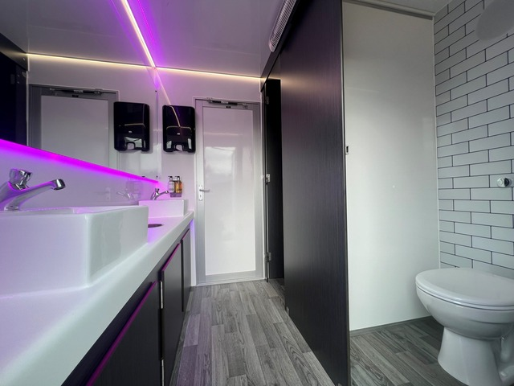
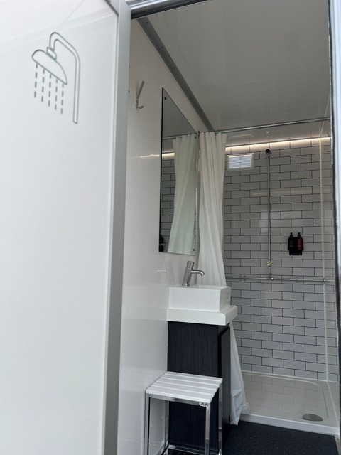

FAQs
When does everything start?
The handfasting ceremony begins at 1:00 pm on Saturday 8th August, so please be seated in The Orchard from 12:30 pm.
Campers and Glampers are very welcome to enjoy use of the site from Friday, however, the Bride and Groom will be busy setting up so please bring provisions if arriving before the ceremony.
Full lineup is available here.
What should I wear?
See Dress Code in the Festival Information above.
Clothes rails will be available to hang dresses, suits and coats for those arriving on Friday and/or if you have a change of clothes.
As an example, for men, we suggest smarter trousers, light bright/jazzy shirts and leave the suit jacket. For women, comfortable, light bright/jazzy dresses and shoes that are easier to walk in on grass.
There will be outdoor games and dancing into the night!
Ultimately, we would love our friends and family to be comfortable in whatever they choose to wear, so go as smart or as casual as you like, whilst reflecting the handfasting cermony and festival atmosphere!
What facilities will be available?
Luxury loos and showers should be available on arrival, providing any of our Campers and Glampers with what they need to enjoy the day before festivities commence. These should make even those less aquainted with the camping lifestyle like us, feel more than comfortable.
Loos include large mirrors, double, hot water sinks, hand towels, toilet paper and luxury soaps and hand creams. We shall provide some added luxuries too.

Individual shower cubicles will also be available that include a large mirror, shower screen, clothes hooks and seat, as well as luxury body wash, shower gel and conditioner dispensers, and vanity unit with non-concussive hot and cold water taps.

There will also be a fridge trailer to add a few food or drinks to.
I'm camping/glamping. Can I pitch anywhere?
To ensure all our guests have somewhere to stay (and Hannah can use her GIS skills to the max), we have designated specific pitches for everyone, across the field for you to stay. There will be signs to help you find your way if we are unavailable when you arrive. Be sure to let us know your ETA though!
I'm staying in a bell tent. Do I need to bring anything?
All bell tents are furnished with a lantern and tea lights, LED light, tent flooring, double raised camp beds with memory foam toppers or raised single camp beds with sprung or self inflating mattresses, one ottoman/table, rugs, bunting and fairy lights. It also includes bedding comprising of a mattress protector, fitted sheet, 15 tog duvet and pillow.
We'd suggest bringing a torch and sensible shoes if you need the loo in the night as it will be on the opposite side of the field. Bring warm clothing in case the temperature drops overnight.
Can I BYOB (bring my own booze)?
Yes absolutely! No hiding the glass bottles in your sleeping bags here!
Bring whatever beverages drinks you would like, however, neither will be in short supply on Saturday (with no cash/card required).
I get hangry/shakey ( Laurie I'm looking at you 😜 ! ) without my square meals. Do I need to bring snacks?
Again, bring whatever snacks you may need, however, neither will be in short supply on Saturday (with no cash/card required). Expect lunch after the ceremony, copious amounts of cake, Bristol's very own Pieminister pie and mash to keep the energy flowing, and hot dogs in the early hours to stop that hangover and conquer the munchies.
Call me Lorelai Gilmore, I need my coffee. Should I bring that with me?
If you, like Julian Wheldon (FOB), are obsessed with your AeroPress then we won't stop you from bringing it! Filter coffee will be available throughout the day and ready for you to grab in the morning, to rouse your fellow tent dwellers.
Will I be able to charge my phone/devices?
Sockets will be in short supply. We highly recommend that everyone bring their own battery packs.